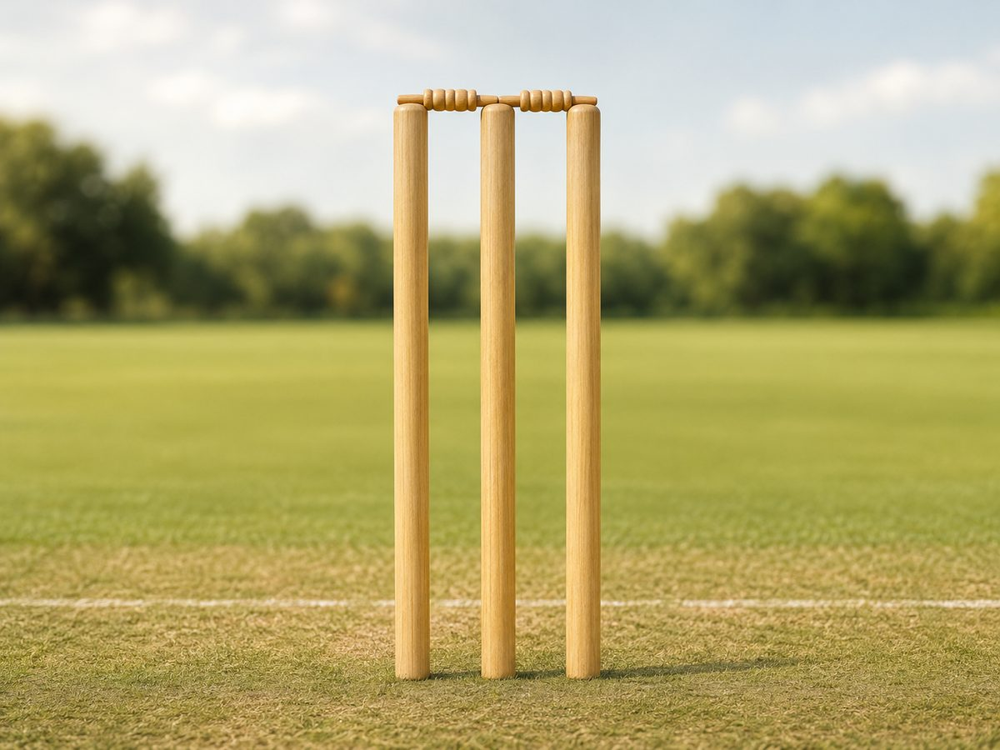
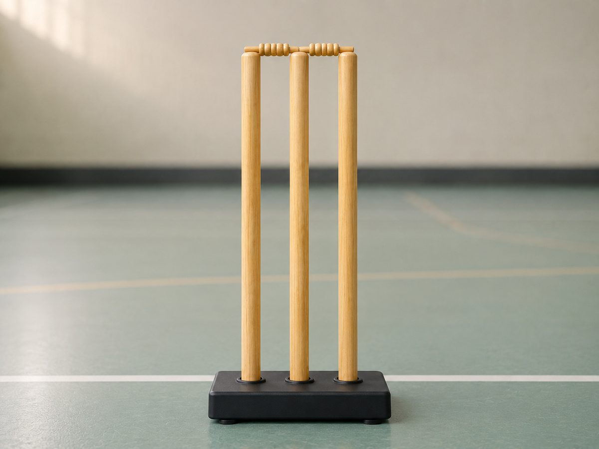
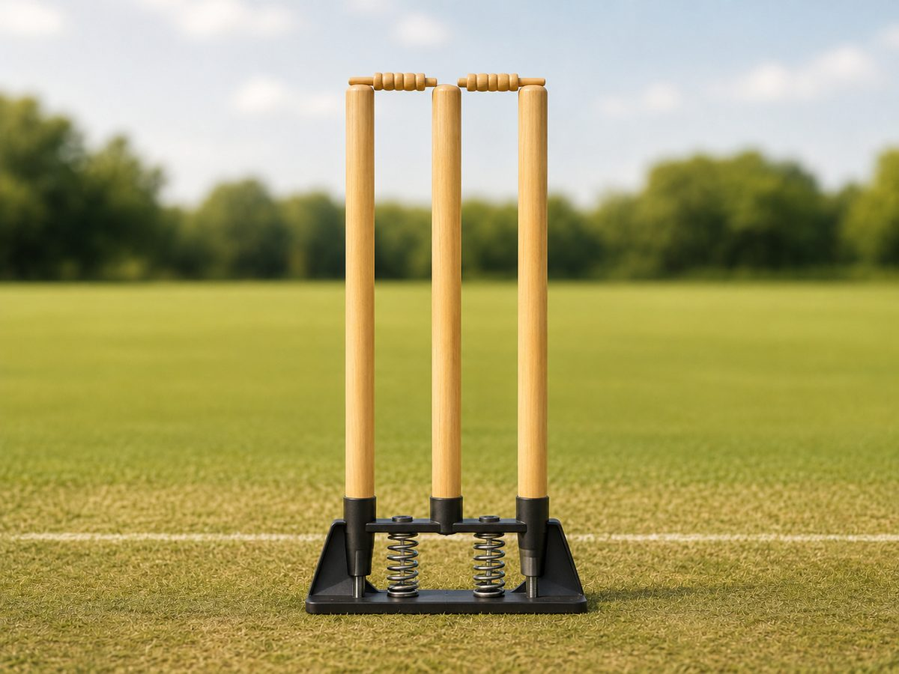
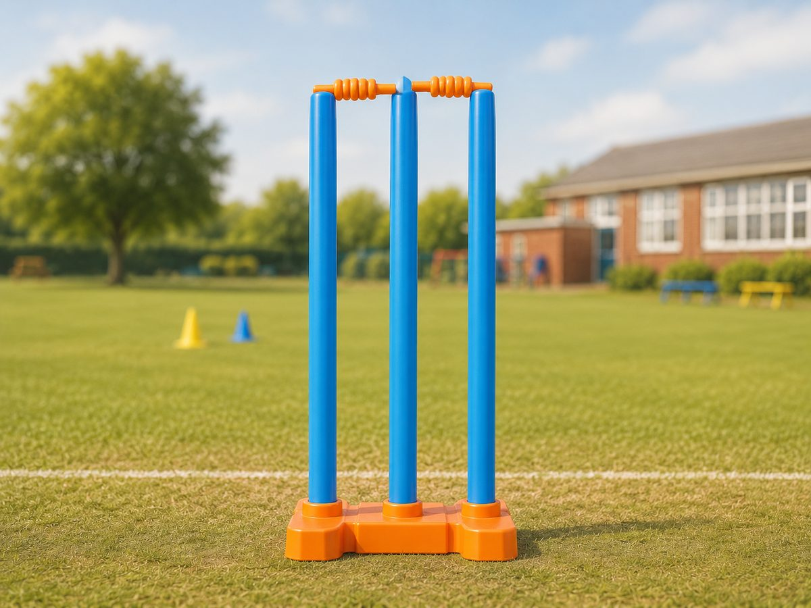
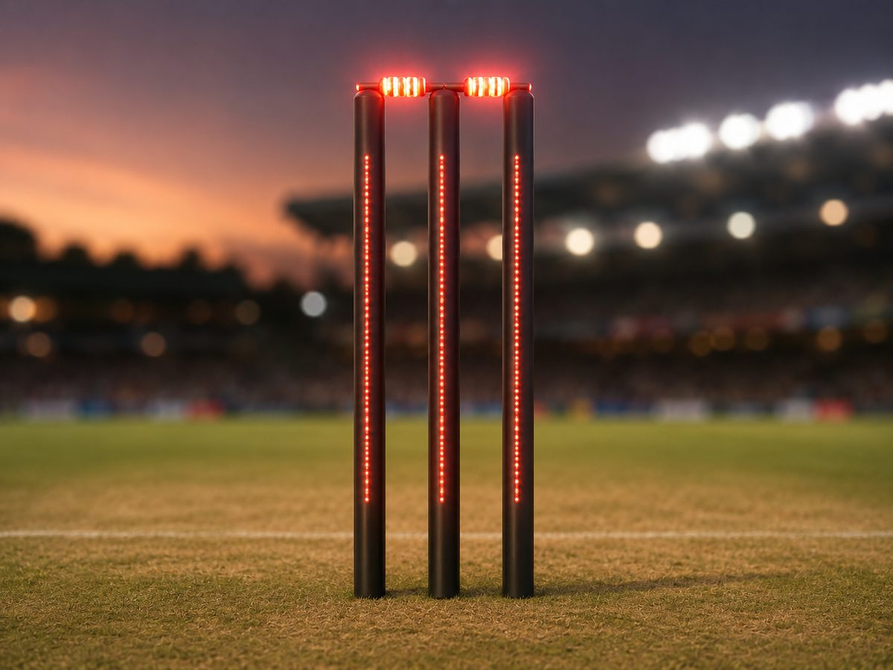
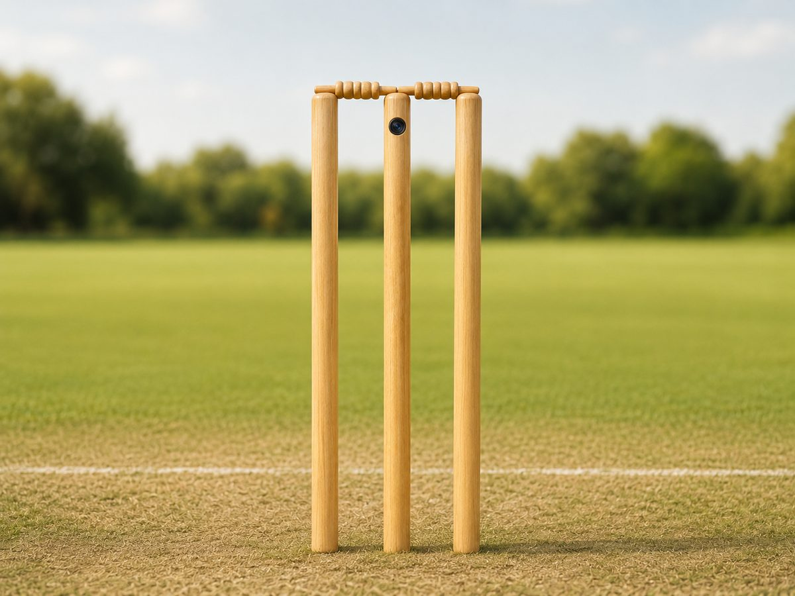

STANDARD01
木製の標準wicket
正式試合の基本形木製
三本の木製stumpsを地面に刺し、その上に二本のbailsを載せる基本形です。
- 高さや全体幅などが規則で定められる
- 学校、クラブ、リーグ、上位大会で使用
クリケットのウィケット、その形と進化
クリケットでいうwicketは、三本のstumpsと、その上に載る二本のbailsからなる道具一式です。基本の木製wicketから、設置環境、安全性、初心者への配慮、LEDやカメラなどの技術に応じた形まで紹介します。

一本一本はstump、上に載る一本一本はbail。そして、三本のstumpsと二本のbailsを合わせた一式をwicketと呼びます。
このページでは一式としてのwicketを紹介しつつ、個別部品名のstumps、bailsも併記します。
正式試合の基本形から、練習・教育用、LEDやカメラを備えたタイプまでを見ていきます。
三本の木製stumpsを地面に刺し、その上に二本のbailsを載せる基本形です。

体育館や舗装面など、stumpsを地面に刺せない場所で自立するよう台座を備えています。

ボールが当たると傾き、バネなどの機構で元に戻ります。

軽く、運びやすく、視認性の高い色を使うことも多い導入用のwicketです。

bailが外れた瞬間に光るタイプです。判定を見やすくし、中継や夜間試合の演出にも使われます。

stumpの内部にカメラやマイクを搭載し、wicketに近い位置から迫力ある映像や音を届けます。
このページの読み方について。
0. 用語上は「wicket」が一式の名称です。 三本のstumpsと二本のbailsを合わせた道具全体をwicketと呼びます。このページでは検索や理解のしやすさから、個別部品名のstumpsやbailsも併記しています。
1. 「正式試合用」と「テクノロジー型」は両立します。 LED型やカメラ内蔵型は、承認条件のもとで正式試合でも使われます。
2. このページの画像は解説用イラストです。 実写写真ではないため、構造の理解を助ける目的で要点を強調しています。正確にはリンク先で確認してみてください。